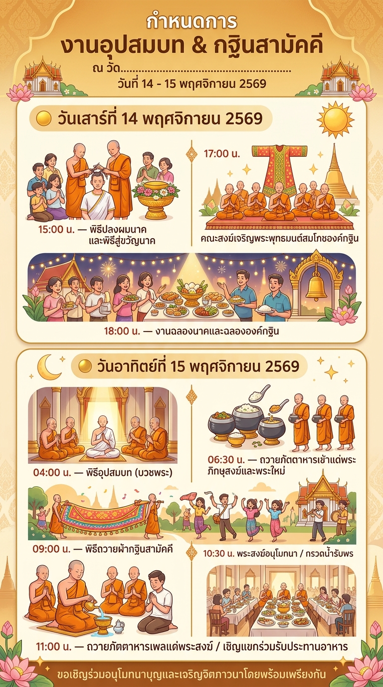

ณ วัด[ชื่อวัด] ตำบล[...] อำเภอ[...] จังหวัด[...]
วันเสาร์ที่ 14 พฤศจิกายน 2569
- 15:00 น.พิธีปลงผมนาคและพิธีสู่ขวัญนาค
- 17:00 น.คณะสงฆ์เจริญพระพุทธมนต์สมโภชองค์กฐิน
- 18:00 น.งานฉลองนาคและฉลององค์กฐิน
วันอาทิตย์ที่ 15 พฤศจิกายน 2569
- 04:00 น.พิธีอุปสมบท (บวชพระ)
- 06:30 น.ถวายภัตตาหารเช้าแด่พระภิกษุสงฆ์และพระใหม่
- 09:00 น.พิธีถวายผ้ากฐินสามัคคี
- 10:30 น.พระสงฆ์อนุโมทนา / กรวดน้ำรับพร
- 11:00 น.ถวายภัตตาหารเพลแด่พระสงฆ์ / เชิญแขกร่วมรับประทานอาหาร